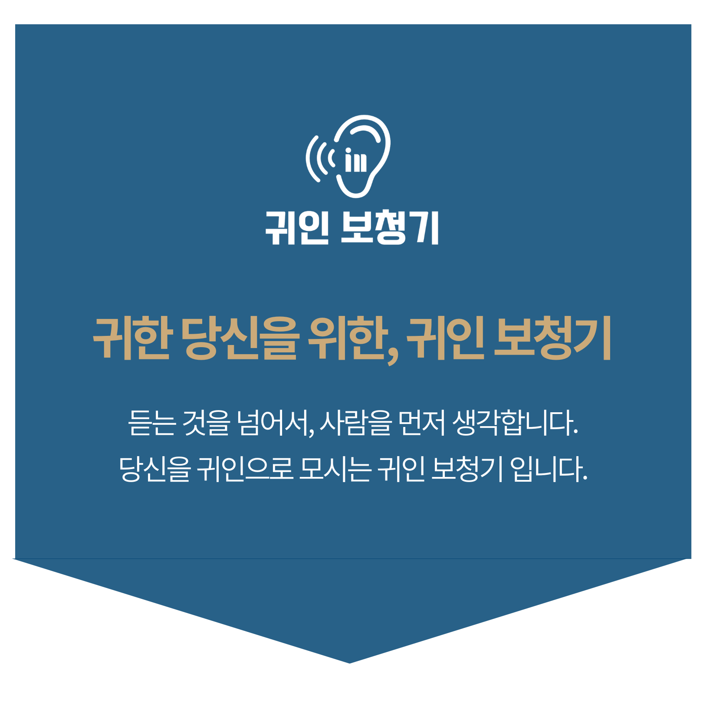
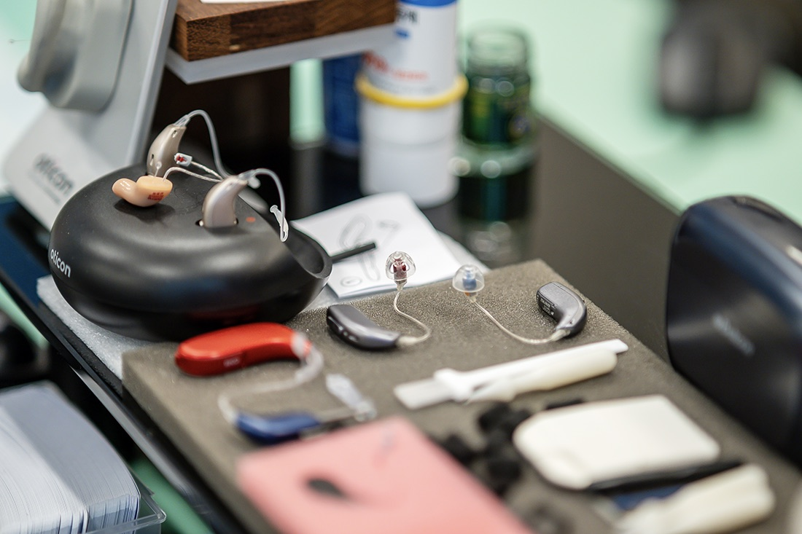
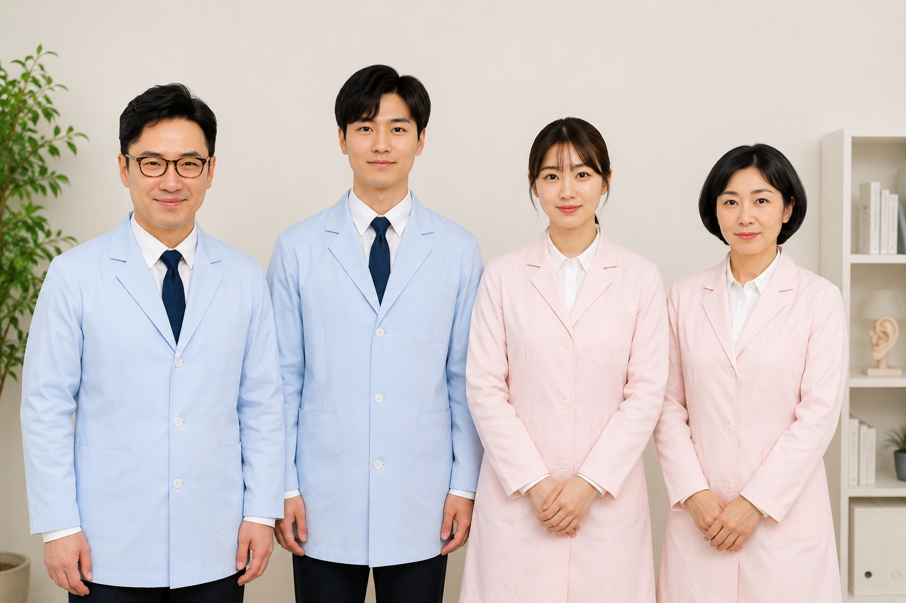
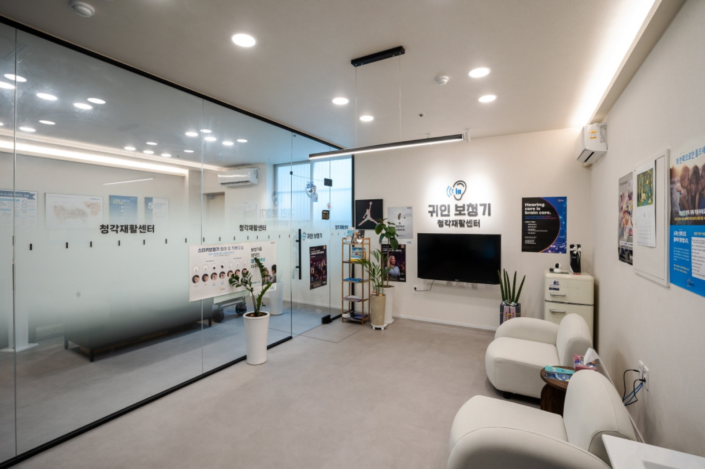
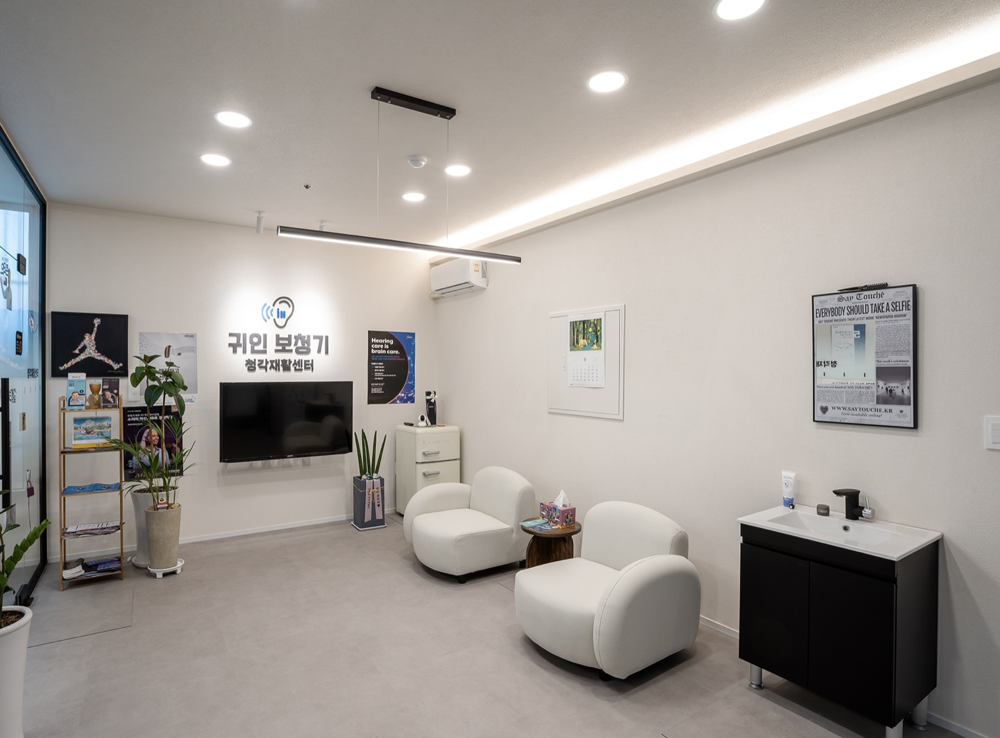
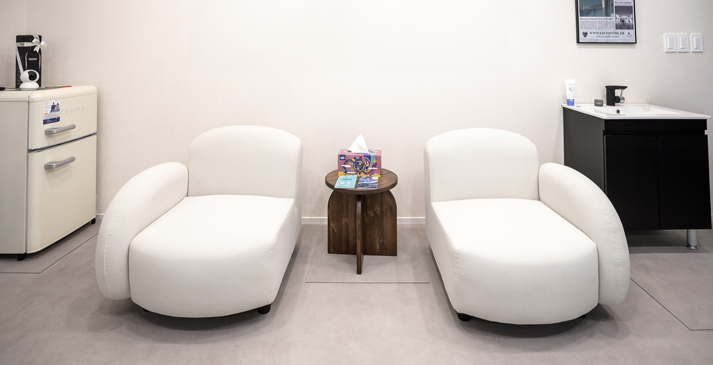
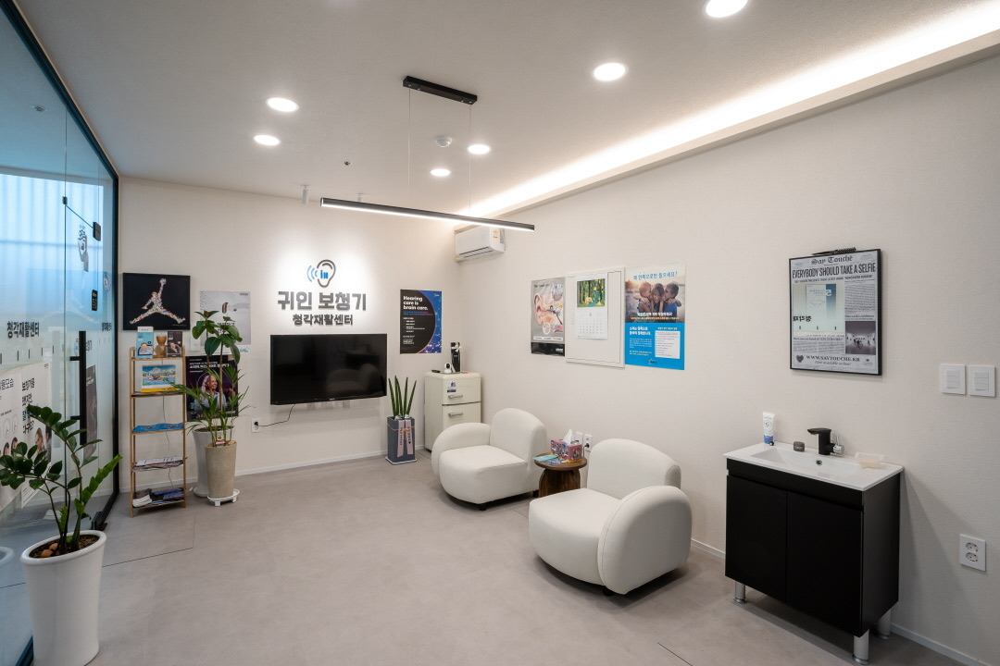
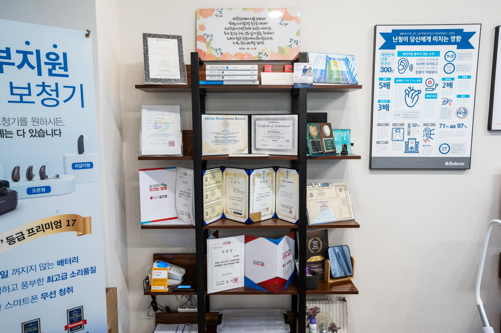
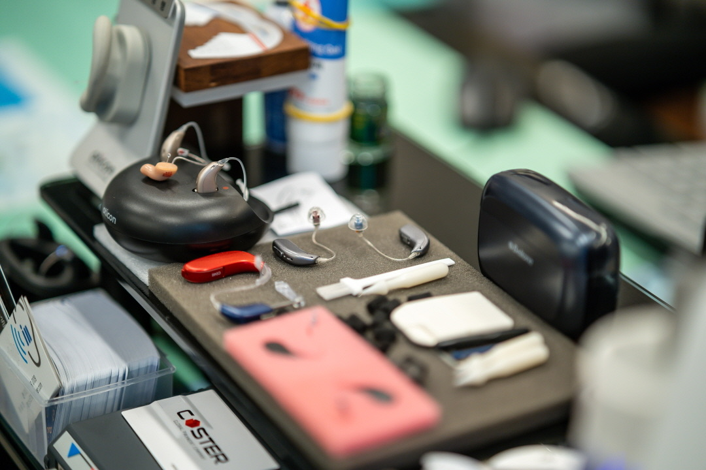

고객 한 분 한 분을 ‘평생 가족처럼’
전문 청각사가 작은 불편까지 귀 기울이는 동행을 시작합니다.
단순 상담이 아닌, 전문 청각사가 직접 고객의 청력, 생활환경, 사용 의지까지 꼼꼼히 파악하여 한 사람 한 사람에게 꼭 맞는 ‘현실적인 보청기 솔루션’을 제안합니다.
보청기 정부지원을 받기 위해서는 병원 진단서, 신청서 등 복잡한 행정 절차가 필요합니다. 귀인 보청기는 처음 접하시는 분들께 다소 낯설고 까다로울 수 있는 서류신청부터 환급까지의 전 과정을 친절하고 체계적으로 함께 도와드립니다.
보청기 구매는 단순한 일회성 지출이 아니라, 꾸준한 관리와 사후 지원이 반드시 뒷받침돼야 하는 과정입니다. 고객 보청기가 늘 최적의 상태를 유지할 수 있도록 귀인 보청기가 항상 곁에서 함께합니다.

보청기는 단순한 기기가 아니라, 삶의 질을 바꾸는 중요한 동반자라고 생각합니다. 저희는 고객 한 분 한 분의 청력 상태와 생활 환경을 깊이 이해하고, 꼭 맞는 방향을 함께 고민합니다.
낯설고 복잡할 수 있는 시작이지만, 소중한 소리를 다시 찾는 여정에 진심으로 동행하겠습니다.
함께하는 사람들 보기 →
보청기는 일정 수준 이상의 난청으로 청각장애 등록이 되면, 국민건강보험에서 비용을 지원하는 ‘의료기기 보장구’로 인정되어 5년에 1회, 1대당 최대 131만 원까지 지원받아 구입할 수 있습니다.
귀인보청기 청각재활센터는 청각장애 진단이 가능한 연계 이비인후과와 협력하고 있으며, 복잡한 신청 절차도 처음부터 끝까지 체계적으로 안내해드립니다.
정확한 상담과 꼼꼼한 피팅, 그리고 꾸준한 사후관리까지 전문 청각사가 직접 안내하는 따뜻한 청각 재활 공간입니다.
불필요한 과장 없이, 편안하고 정직한 상담 환경에서 보청기를 처음 접하시는 분도 안심하고 방문하실 수 있습니다.






진해센터
경남 창원시 진해구 진해대로 999, 1층 108호
명지서비스센터
부산 강서구 명지국제6로 99, A동 1070호
· 010-6599-0109
· 0507-1426-0116